| 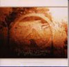 | 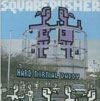 | 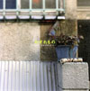 | 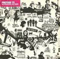 | 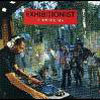 | 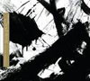 |
エイフェックス・ツイン
アンビエントワークス１、２。 ：CDとは、とりあえずこの2枚をもっていれば事足ります。
スクエアプッシャー
ウルトラビジター。 ：ジャケットからみてトム的には1番気合い入っているのでは？ボーナスCDもよいです。レイ・ハラカミ
：風呂無しアパートに住んでいても本質的には何の問題もないのです。
プレフューズ７３
：初めて聞いた時から売れると思ってましたよ。
ジェフ・ミルズ
エクスヒヴィショニスト。 ：高揚感を得るのに最適かと。
アンダーワールド
ボーンスリッピー。 ：ベタですがやはりこれはとても良い曲です。
| 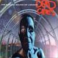 | 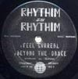 | 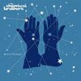 | 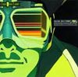 | 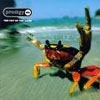 | 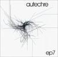 |
FSOL
デッドシティ。 ：中学の時、兄貴のCDを適当に・・・てハマりました。
デリック・メイ
ストリングスオブライフ。 ：精神をニュートラルにしてくれます。
ケミカルブラザーズ
さらばダスト惑星。 ：まずは最初から。いつも元気ですね、良いことです。
ケン・イシイ
：俺もケン・イシイみたいになりたい？！・・って彼はエリートなんですよねぇ。
プロディジー
ザファットオブザランド。 ：なんか映画とかありましたよね？前作をサントラにした奴。
オウテカ
：とんがってます、えらいとんがってます。